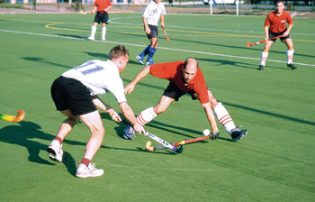
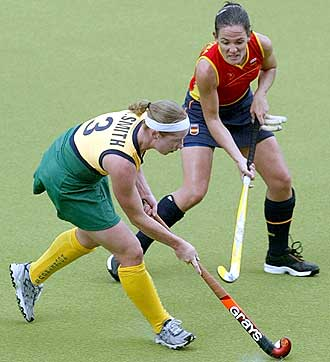

A gyeplabda egy igen régi múltra visszatekintő, ütős, labdás csapatsport. A játék célja, hogy a 7,5 cm átmérőjű és 160 gramm súlyú labdát az ellenfél 3,66 méter széles és 2,14 méter magas kapujába juttassuk.
 